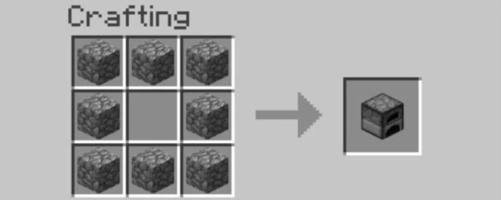
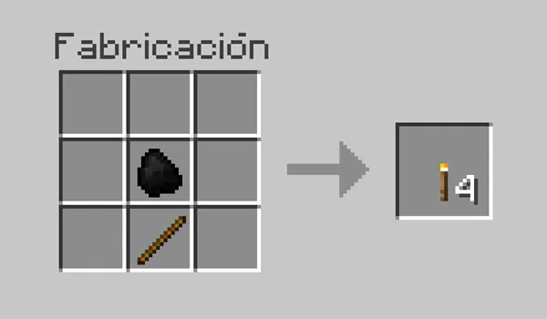
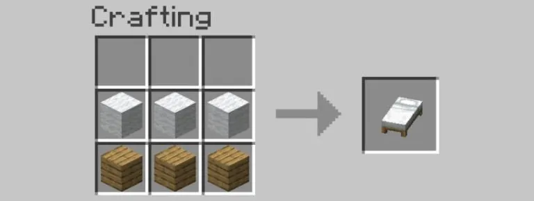
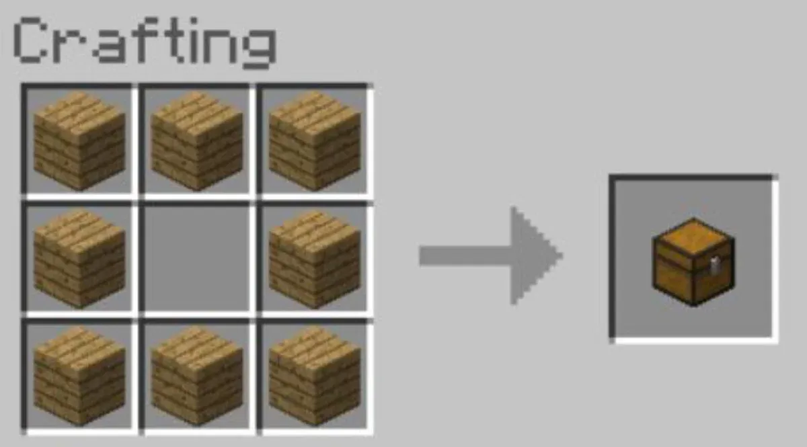

Todo lo que necesitás saber para sobrevivir tu primera noche
Primeros Pasos
Cuando empezás una nueva partida en Minecraft, aparecés en un mundo generado aleatoriamente.
Tu objetivo principal es sobrevivir la primera noche, ya que cuando oscurece
comienzan a aparecer enemigos peligrosos.
¿Qué hacer en los primeros minutos?
Buscá árboles y golpeá los bloques de madera para recolectar troncos.
Abrí tu inventario (tecla E) y fabricá tablas de madera.
Con las tablas hacé una mesa de crafteo.
Fabricá herramientas básicas: pico, hacha y espada de madera.
Buscá un lugar para construir tu primera casa o refugio.
Colocá una cama y dormí para evitar la noche.
Materiales Básicos
Minecraft tiene una gran variedad de materiales. Acá te mostramos los más importantes
para empezar, ordenados de menor a mayor calidad:
Materiales para herramientas y armadura
Material
Dónde encontrarlo
Durabilidad
Madera
Árboles en la superficie
Baja
Piedra
Minando bajo tierra o en cuevas
Media
Hierro
Minando en cuevas (entre Y=15 y Y=55)
Media-Alta
Oro
Profundidades y el Nether
Media (pero pica más rapido)
Diamante
Muy profundo (Y=-58 a Y=16)
Muy Alta
Netherita
El Nether
Máxima
Crafteo Básico
El crafteo es el sistema de fabricación de Minecraft. Se usa una
mesa de crafteo (cuadrícula de 3x3) para crear la mayoría de los objetos del juego.
Objetos esenciales para craftear
Mesa de crafteo: 4 tablas de madera en cuadrado.
Horno: 8 bloques de piedra alrededor del borde.

Pico de madera: 3 tablas arriba + 2 palos verticales.
Antorcha: 1 carbón encima de 1 palo.

Cama: 3 lanas + 3 tablas de madera (misma lana).

cofre: 8 tablas de madera alrededor del borde.

Mobs y Enemigos
Los mobs son las criaturas del juego. Pueden ser amigables, neutrales
o hostiles. Los hostiles aparecen de noche o en lugares oscuros.
Enemigos más comunes
Zombie: Aparece de noche, lento pero peligroso en grupo.
Se quema con la luz del sol.
Esqueleto: Dispara flechas desde lejos. También se quema al amanecer.
Creeper: El enemigo más famoso. Se acerca en silencio y
explota destruyendo bloques y quitando vida.
Araña: Neutral de día, hostil de noche. Puede trepar paredes.
Enderman: Neutral hasta que lo mirás. Muy peligroso, teleporta.
Animales útiles
Vaca: Da cuero y carne cruda.
Cerdo: Da carne. Se puede montar con una zanahoria en un palo.
Gallina: Pone huevos y da carne y plumas.
Oveja: Da lana (necesaria para la cama).
Video: Cómo sobrevivir tu primera noche
Este video de YouTube explica paso a paso cómo arrancar una partida nueva: